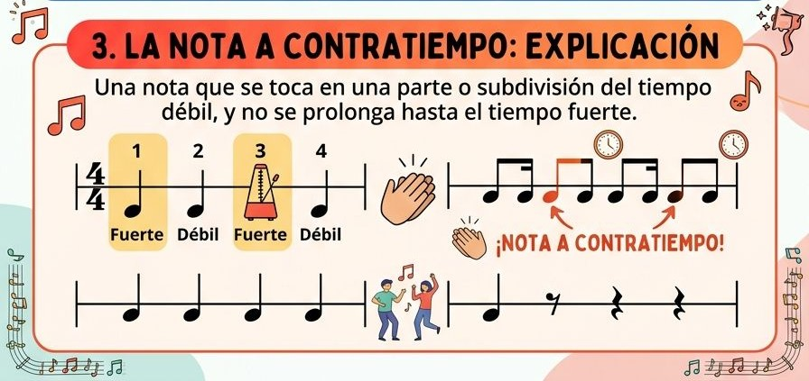

Diccionario
Diccionario
Completar contenido
⏱️ 3. La nota a contratiempo
El contratiempo es un recurso rítmico que rompe la regularidad de la música y le da dinamismo:
⚡ ¿En qué consiste? Ocurre cuando suena una nota en un tiempo o parte débil del compás, precedida por un silencio en el tiempo o parte fuerte.
🤫 La regla del contratiempo: A diferencia de la síncopa, la nota a contratiempo no se prolonga hacia el tiempo fuerte siguiente; empieza en la parte débil y termina antes de que llegue la parte fuerte.
🕺 Efecto: Produce una sensación de rebote o balanceo, muy típica de estilos como el reggae, el jazz o el ska.
Infografía

Cuestionario adaptativo
Elige la respuesta correcta para cada pregunta. Para subir al siguiente nivel debes responder correctamente dos preguntas seguidas. Si fallas dos seguidas, bajarás al nivel anterior.